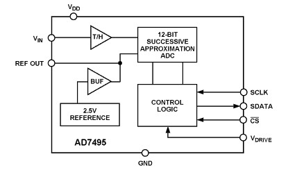
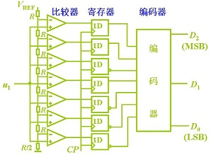

尽管大家都知道，但还是提一提。大牛奥本海姆的《信号与系统》中是这样描述的：
Let x(t) be a band-limited signal with X(jw) = 0 for |w|> wM. Then x(t) is uniquely determined by its samples x(nT),n=1,±1,±2,...,if
ws > 2wM where ws = 2 pi/T.
Given these samples, we can reconstruct x(t) by generating a periodic impluse train in which successive impluse have amplitudes that are successive sample values. This impluse train is then processed through an ideal lowpass filter with gain T and cutoff frequency greater than wM and less than ws-wM. The resulting output signal will exactly equal x(t).
来捋一捋，几个点：
实际中，信号往往是无线带宽的，如何保证带宽有限？所以，我们在模拟信号输入端要加一个低通滤波器，使信号变成带宽有限，再使用2.5~3倍的最高信号频率进行采样。关于此我们下面将模拟数字转换过程将会看到。
虽说是不能小于等于2倍，但选2倍是不是很好呢，理论上，选择的采样频率越高，越能无失真的恢复原信号，但采样频率越高，对后端数字系统的处理速度和存储要求也就越高，因此要选择一个折中的值。
如果后端数字信号处理中的窗口选择过窄，采样率太高，在一个窗口内很难容纳甚至信号的一个周期，这从某方面使得信号无法辨识。比如，数字信号处理的窗口大小为1024个点，采样率为50KHz，则窗口最多容纳1024*(1/50KHz)=20.48ms的信号长度，若信号的一个周期为30ms>20.48ms，这就使得数字信号的处理窗口没法容纳一个周期信号，解决的办法就是在满足要求的前提下使用减小采样率或增加窗口长度。
记得有一次参加中科院计算所的实习笔试，里面就有这么一道题：模拟信号转换到数字信号要经历哪两个步骤？还好，早有准备，立刻填上了采样和量化。我们下面就来详细分析下这两个过程，但在分析之前，我们先给出一张整个过程的流图，您可以先想想为什么需要各模块。
我们实际中的模拟信号都是通过传感器采集进来的，做过单片机的人应该熟知DS18B20温度传感器，不好意思，那是数字传感器，也就是说人家做传感器的时候把AD转换也放到传感器里面了。但这并不是普遍的情况，因为温度量是模拟信号中最容易测量的量了，而大多数的传感器并没有集成AD转换过程，如大多数的加速度传感器、震动传感器、声音传感器、电子罗盘，甚至有的GPS（别懵了，GPS也算是一种传感器哦）等，都是模拟输出的。而且由于物理制作的原因，传感器返回的电信号非常微小，一般在几mV（如果是电流，也一般在几mA），这么微弱的信号，如果经过导线或电缆传输很容易就湮灭在噪声中。因此，我们常常见到模拟传感器的输出线都会使用套上一层塑胶的线，叫__屏蔽线__（如图）。
屏蔽线只能保证在信号传输到系统之前受到的干扰最小，但信号仍要经过处理才能为数字系统使用。在模拟信号（尤其是高频信号）的输入端首先要使用低噪声放大器对信号进行放大，这个放大器有特殊的要求，一定是低噪声，我们已经知道，模拟信号信号已经非常微弱，如果放大器还存在一定的噪声，在噪声叠加之后放大出来的信号可能已经不再是原信号了。既然说到低噪声，那么低噪声是如何衡量的呢？这可以通过__放大器噪声系数（NF）__来定，
噪声系数定义为放大器输入信号与输出信号的信噪比。其物理含义是：信号通过放大器之后，由于放大器产生噪声，使信噪比变坏；信噪比下降的倍数就是噪声系数。噪声系数通常用dB表示，
实际中除了考虑低噪声系数外，还要考虑放大器的带宽和频率范围以及最重要的放大增益。由于输入信号的强度可能时变，采用程序可控（程控）的放大增益保证信号能达到满度而又不会出现饱和（实际中要做到这一点还是很难的）。
在Nyquist采样定理中已经提过，要满足采样定理必须要求信号带宽有限，使用大于2倍的最高信号频率采样才能保证信号的不混叠。低通滤波器的一个考虑就是使信号带宽有限，以便于后期的信号采样，这个低通滤波器是硬件实现的。另一方面，实际情况中我们也只会对某个频频段的信号感兴趣，低通滤波器的另一个考虑就是滤波得到感兴趣的信号。比如，测量汽车声音信号，其频率大部分在5KHz以下，我们则可以设置低通滤波器的截止频率在7KHz左右。
程控的实现方法就是使用模拟通道选择芯片（如74VHC4051等）。
NOTES:
有关滤波与程控的电路设计请参考文献[1].
在采样之前的所有电路实现方案叫__信号调理电路__。这样，我们就可以根据这个词到处Google/Baidu文献了。
采样貌似有一套完整的理论，就是《数字信号处理》书中的一堆公式推导，我们这里当然不会那么去说。其实采样最核心的问题就是采样率选择的问题。
我们希望df越小越好，但实际上，df越小，N越大，计算量和存储量随之增大。一般取N为为2的整数次幂，不足则在尾端补0。
这里给出我的一个选择Fs的方案流程图，仅供参考。
采样后还有一个重要的操作是采样保持(S/H)操作，采样脉冲采样后无法立刻量化，这个过程要等待很短的一个时间，硬件上一般0.几个us，等待量化器的量化。
注意，在量化之前，所有的信号都是模拟信号，模拟信号就有很多干扰的问题需要考虑，这里只是从总体上给出我对整个过程的理解。更多细化的方案还需要根据实际信号进行研究。
我们可以先直观的看一下量化的过程，
量化有个关键的参数，叫__量化位数__，在所有的AD转换芯片（如AD7606）上都能看到这个关键的参数，常见的有8bit，10bit，12bits，16bit和24bit。
如上图，以AD7606为例，AD7606是16bit的AD芯片，量化位数指用16bit来表示连续信号的幅值。因此，考虑AD的测量范围（AD7606有两种：±5V和±10V）,则__AD分辨率__是
±5V: (5V-(-5V)) / (2^16) = 152 uV
±10V: (10V-(-10V)) / (2^16) = 305 uV
量化位数越高，AD分辨率越高，习惯上，AD分辨率用常用LSB标示。
因此，AD7606中对于某个输入模拟电压值，因为存在正负电压，若以0V为中间电压值，范围为±5V时AD转换电压可计算为
AD7606若使用内部参考电压，Vref=2.5V。哦对了，这又出现个__参考电压__。参考电压与AD量化的实现方式有关，从速度上分串行和并行，串行包括逐次逼近型，并行方式包括并行比较式，如下图（左：串行，右：并行）。AD7606是使用逐次逼近型的方式。
 
AD转换芯片另外两个重要参数是转换时间（转换速率）。并行AD的转换速率比串行的要高。但并行比较的方式中电阻的精度对量化有影响。
接着，我们还将介绍一个重要的概念：量化噪声。量化噪声对应__量化信噪比__,
SNRq = (6.02N + 4.77) dB
其中N为量化位数，且不去管这个公式是怎么得到的（详细推导可参考文献[2]），对于
N=12, SNRq ≈ 70dB
N=16, SNRq ≈ 94dB
从中可以看出：每增加1bit量化位数，SNRq将提高6.02dB，在设计过程中，如果对方有信噪比的要求，则在ADC选型时就要选择合适位数的ADC芯片。
明显的，并不是量化位数越高越好，量化位数的提高将对成本、转换速度、存储空间与数据吞吐量等众多方面提出更高的要求。同时，我们尽量提高量化噪声的前提是信号的SNR已经比较低了，如果信号的SNR比量化噪声还高，努力提高量化噪声将是舍本求末的做法。
到最后，给点福利吧，下面是我参考AD7606数据手册设计的原理图，经过实践检验可用：
[1] [程控滤波器](../enclosure/模拟信号采样与AD转换/程控滤波器.pdf)
[2] [ADC性能与指标-Analog](../enclosure/模拟信号采样与AD转换/ADC性能与指标-Analog.pdf)
[3] 彭启宗老师的DSP视频
[4] 胡广书，数字信号处理(第三版)